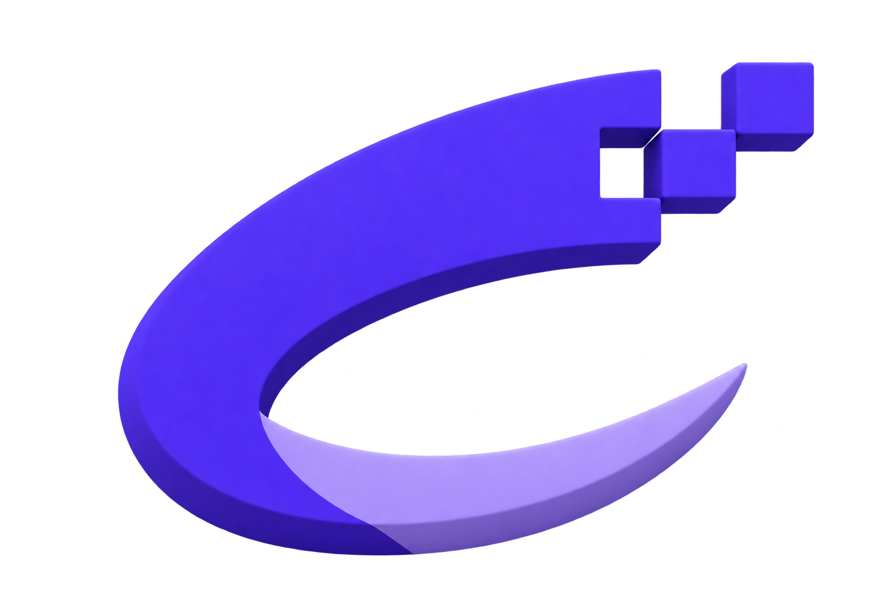
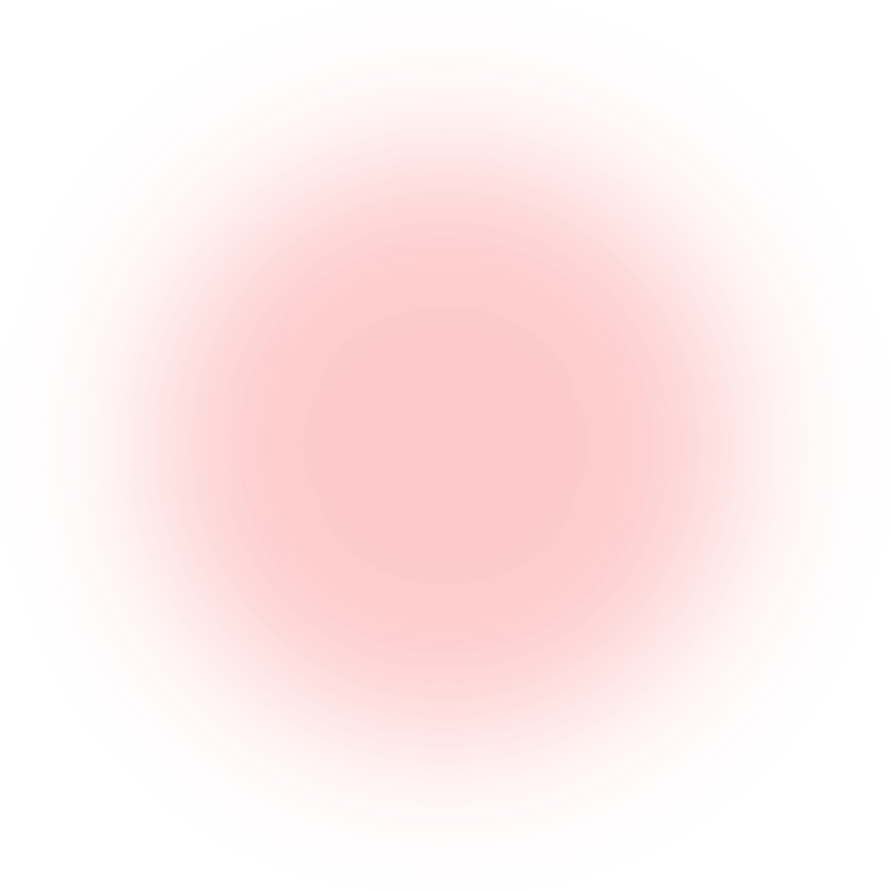

How a software company
joins the archipelago.
TL Groups is a long-term home for proven software companies. Compass, Tidewatch, and our rebuilding practice are the systems each company inherits.
Products built for demanding work.
Torch Proxies
Reliable proxy infrastructure for teams that need to collect, verify, and move at internet scale without losing control of the work.
Explore Torch Proxies SHARED PLATFORM · 02Shield Proxies
A dependable proxy layer designed to protect critical workflows, give teams cleaner routing, and keep high-volume operations moving.
Explore Shield Proxies
SHARED PLATFORM · 03Eyonic.ai
Practical AI tools that turn complex operational signals into clear next steps for the people running the product.
Visit Eyonic.aiOur services.
Hands-on support for the digital work that needs more than a template.

GRYFFIN STUDIOBuild websites with us.
From first direction through launch, Gryffin Studio designs and builds clear, high-performing websites with the product team—not around them.
Visit Gryffin Studio
GRYFFIN ANALYTICSMake the numbers useful.
We shape the dashboards, reporting, and measurement practice that turns day-to-day product data into decisions your team can act on.
Visit Gryffin AnalyticsWhat happens after a company joins
Salvage & Rebuild is the practice we use before any growth plan: understand the company, take care of the common systems, then repair the customer experience.
Learn what is already working
We study the product, customers, and team before making an offer — including the parts that need more than a quick fix.
Take on the common work
Billing, identity, and infrastructure move onto Compass so the company has a dependable operating base.
Repair the customer experience
Performance, reliability, and the bugs customers have stopped reporting come before the new roadmap.
Earn the next stage of growth
Growth Tides brings lifecycle, pricing, and retention expertise once the product is ready to benefit from it.
Growth work, brought in when the product is ready
Paid acquisition, lifecycle email, pricing, and retention are handled by a rotating team that has already learned across the rest of the archipelago.
Who should - and should not - talk to us
A useful product with a real customer base
A company that has solved a meaningful problem but needs time, shared systems, and a long-term owner to move again.
A company looking for a fast flip
TL Groups is designed for long-term stewardship. We are not the right partner when the aim is a short holding period or a forced rebrand.
Frequently asked questions.
Do you rebrand companies?
No. The company keeps the name customers already know.
Do you only acquire software?
Yes. The shared systems and operating model are built around software products and their teams.
What happens first?
We learn what customers value, bring in the common systems, then focus on the fixes that make the product more dependable.
Run a product that deserves a longer horizon?
Tell us what has already been built, and where it has become harder to move forward.
Start a conversation